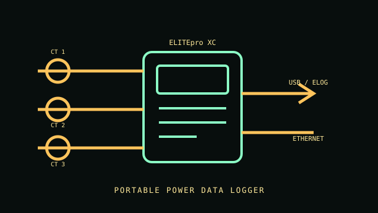

[ PORTABLE POWER LOGGER // ELITEpro XC ]
DENT Instruments ELITEpro XC
Portable power and energy data logger for single- or three-phase studies. This ELITEpro XC record covers the logger body; current range and some voltage limits depend on the selected sensors and power configuration.

VARIANT CONTROL: Confirm CT or flexible sensor model, logger power source, input wiring and kit suffix. Sensor ratings are not intrinsic direct-input ratings of the logger body.
Specifications & compatibility
| Exact model / function | DENT Instruments ELITEpro XC portable power data logger. |
|---|---|
| Measured metrics | Voltage, current, power and energy logging for single- and three-phase systems; four configurable analog inputs are also available. |
| Voltage / phase | When line-powered: 80–600 V phase-to-phase AC or DC. When externally powered: 0–600 V AC or DC. Applicable system configuration depends on the operator guide. |
| Current range / accuracy | Sensor-dependent, with supported current transformers up to 6,000 A. Manufacturer states better than 1% accuracy and typical <0.2%; readings depend on installed sensor and measurement conditions. |
| Display / network / output | Portable data logger with 16 MB nonvolatile memory, USB and Ethernet; optional/discontinued wireless accessories are not assumed for this record. |
| Form factor | Portable enclosed logger with multiple voltage/current inputs and external sensors. |
| Host compatibility | DENT ELOG configuration/analysis software; manufacturer lists Windows 7–11 support for applicable ELOG release. Check software release notes before using a current OS. |
| Electrical safety | Manufacturer identifies CAT III up to 600 V for the logger. Sensor category and ratings may differ; use each sensor's own limits. Follow the operator guide and use qualified personnel on live systems. |
Installation & archival notes
- Log the sensor model, range, channel assignment, voltage source, sampling interval and ELOG software version.
- Do not treat typical accuracy or CAT rating as applying to every accessory or wiring arrangement.
- Inspect leads and sensor insulation before each field study; discontinue damaged equipment.
Manufacturer sources
- DENT Instruments — ELITEpro XC product pageLogger identity, features and configuration.
- DENT Instruments — ELITEpro XC datasheetElectrical ranges, accuracy, storage and safety categories.
- DENT Instruments — ELITEpro XC operator guideModel-specific connection, sensor and operation instructions.
- DENT Instruments — ELOG software informationHost software download and compatibility information.